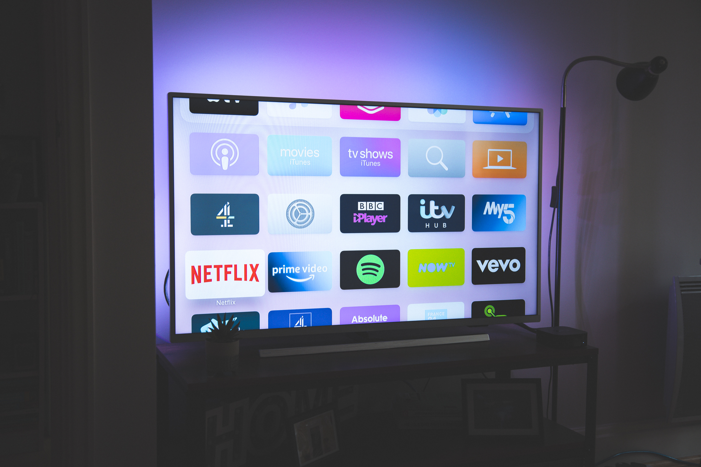

Lançamento do Novo Console de Jogos X-Play: Uma Experiência Imersiva de Última Geração
postado em 11 de maio de 2023
A aguardada empresa de tecnologia Z lançou oficialmente o seu mais recente console de jogos, o
X-Play. Projetado para oferecer uma experiência imersiva de última geração, o X-Play promete
revolucionar o mundo dos jogos e entretenimento digital.
Com uma poderosa arquitetura de hardware, o X-Play oferece um desempenho excepcional, permitindo que
os jogadores desfrutem de gráficos incríveis, jogabilidade suave e tempos de carregamento
ultrarrápidos. Os jogos são apresentados em resolução ultra-alta, proporcionando detalhes nítidos e
cores vibrantes que dão vida a mundos virtuais.
Lançamento da Nova TV Inteligente Z Vision: Entretenimento de Última Geração em sua Sala
postado em 11 de maio de 2023 
A renomada fabricante de eletrônicos Z apresentou sua mais recente inovação no campo da televisão: a
Z Vision. Essa nova TV inteligente leva o entretenimento doméstico a um novo patamar, oferecendo
recursos e tecnologias de ponta.
A Z Vision apresenta uma tela de resolução ultra alta, proporcionando imagens deslumbrantes e
detalhes incríveis. Com suporte a HDR e uma ampla gama de cores, cada cena ganha vida com cores
vivas e contraste impressionante. Os espectadores podem desfrutar de filmes, séries e jogos com uma
qualidade de imagem excepcional.
Destaques de Produtos Eletrônicos
Conheça Nossos Destaques!
Descubra os eletrônicos mais desejados do momento em nossa seção de Destaques de Produtos Eletrônicos. Apresentamos uma seleção cuidadosamente escolhida dos dispositivos mais recentes e populares, desde smartphones de última geração até laptops poderosos, câmeras de alta qualidade e muito mais. Fique por dentro das tendências tecnológicas e encontre o dispositivo perfeito que atenda às suas necessidades e expectativas de desempenho. Confira nossa lista de destaques de produtos eletrônicos para encontrar o dispositivo certo para você. leia mais
Avaliações e Análises de Produtos Eletrônicos
Descubra a Opinião Especializada sobre os Eletrônicos
Quer saber mais sobre os eletrônicos antes de fazer uma compra? Em nossa seção de Avaliações e Análises de Produtos Eletrônicos, nossa equipe de especialistas testa e avalia minuciosamente os dispositivos mais recentes do mercado. Com opiniões imparciais e detalhadas, fornecemos informações valiosas sobre desempenho, recursos, qualidade de construção e muito mais. Conte conosco para ajudá-lo a tomar decisões informadas e encontrar o eletrônico perfeito para suas necessidades. leia mais
Recomendações de Acessórios para Eletrônicos
Acessórios Essenciais para seus Eletrônicos
Para obter o máximo de seus eletrônicos, é essencial ter os acessórios certos. Em nossa seção de Recomendações de Acessórios para Eletrônicos, apresentamos uma seleção de itens indispensáveis que complementam seus dispositivos. De capas protetoras a carregadores rápidos, fones de ouvido de alta qualidade a adaptadores versáteis, fornecemos recomendações confiáveis para aprimorar sua experiência com a tecnologia. Descubra os acessórios perfeitos para maximizar o desempenho e a funcionalidade dos seus eletrônicos preferidos. leia mais
Última atualização do site: 11 de maio de 2023